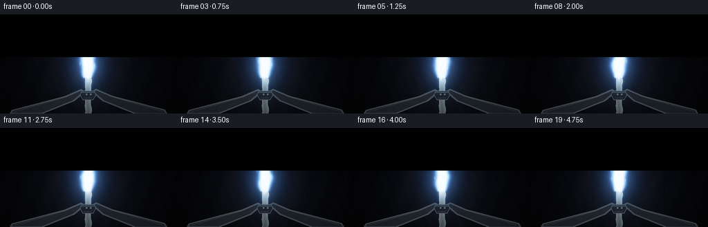
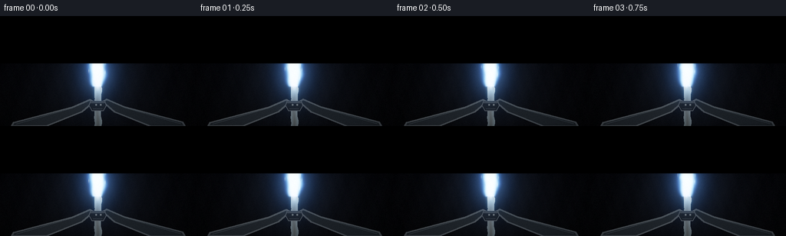
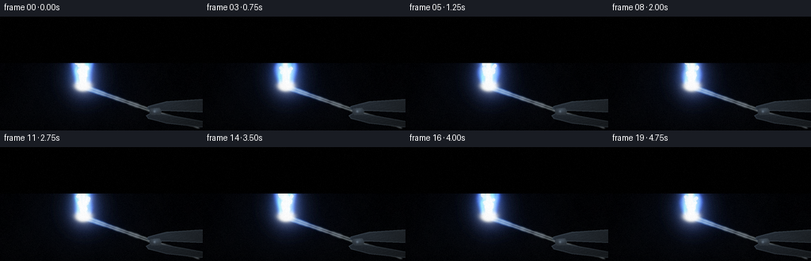
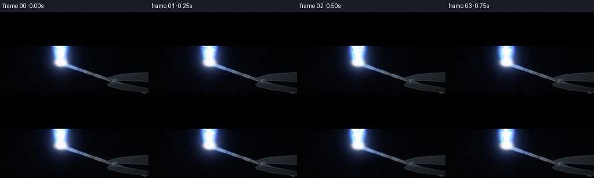
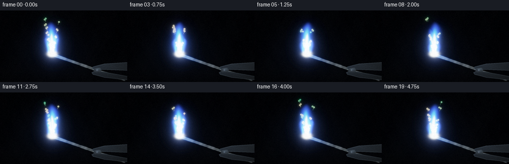
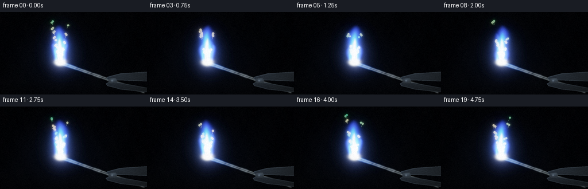
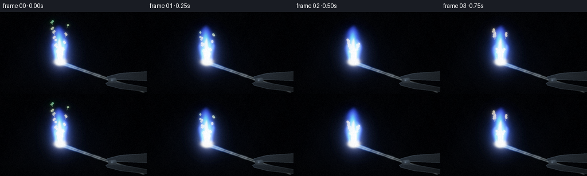
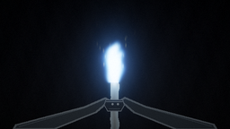
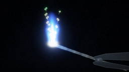
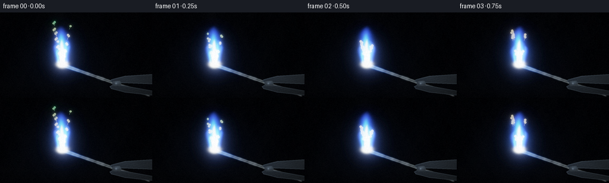

CODING AGENTS AS PIXEL WORLD MODELS
traex/DeepSeek-V4.1-Flash · phygen_127
点击播放 · 原生 RGB 像素
逐轮保存的候选
回放视频、检查图与代码变化。
每份候选均可单独播放。实际图片检查记录在下方工具轨迹中。
候选 01播放与检查图
点击播放 · 原生 RGB 像素

展开代码变化
--- 上一保存版本
+++ 本次保存版本
@@ -0,0 +1,316 @@
+from pathlib import Path
+import math
+
+import numpy as np
+from PIL import Image, ImageDraw, ImageFilter
+
+import artifact_io
+
+
+ROOT = Path(__file__).resolve().parent
+SPEC_W, SPEC_H = 256, 144
+SS = 2
+W, H = SPEC_W * SS, SPEC_H * SS
+FPS = 4.0
+FRAME_COUNT = 20
+
+
+def smoothstep(edge0, edge1, value):
+ t = np.clip((value - edge0) / (edge1 - edge0), 0.0, 1.0)
+ return t * t * (3.0 - 2.0 * t)
+
+
+def add_gaussian(canvas, cx, cy, sx, sy, color, strength):
+ """Add a compact, soft elliptical light sprite to an RGB float canvas."""
+ if strength <= 0.0:
+ return
+ rx = max(2.0, sx * 3.2)
+ ry = max(2.0, sy * 3.2)
+ x0 = max(0, int((cx - rx) * SS))
+ x1 = min(W, int((cx + rx) * SS) + 1)
+ y0 = max(0, int((cy - ry) * SS))
+ y1 = min(H, int((cy + ry) * SS) + 1)
+ if x0 >= x1 or y0 >= y1:
+ return
+ yy, xx = np.mgrid[y0:y1, x0:x1].astype(np.float32)
+ xx = (xx + 0.5) / SS
+ yy = (yy + 0.5) / SS
+ spot = np.exp(-0.5 * (((xx - cx) / sx) ** 2 + ((yy - cy) / sy) ** 2))
+ canvas[y0:y1, x0:x1] += spot[..., None] * np.asarray(color, np.float32) * strength
+
+
+def polygon_layer(points, fill, outline=None, width=1):
+ layer = Image.new("RGBA", (W, H), (0, 0, 0, 0))
+ draw = ImageDraw.Draw(layer)
+ scaled = [(int(round(x * SS)), int(round(y * SS))) for x, y in points]
+ draw.polygon(scaled, fill=fill)
+ if outline is not None:
+ draw.line(scaled + [scaled[0]], fill=outline, width=width)
+ return layer
+
+
+def render_background(time_s):
+ yy, xx = np.mgrid[0:H, 0:W].astype(np.float32)
+ x = (xx + 0.5) / SS
+ y = (yy + 0.5) / SS
+
+ top = np.array([0.010, 0.013, 0.026], np.float32)
+ bottom = np.array([0.028, 0.030, 0.040], np.float32)
+ blend = np.clip(y / SPEC_H, 0.0, 1.0)[..., None]
+ image = top * (1.0 - blend) + bottom * blend
+
+ # A cool, smoky room is revealed only by the flame.
+ dx = (x - 127.0) / 84.0
+ dy = (y - 78.0) / 100.0
+ ambient = np.exp(-2.1 * (dx * dx + dy * dy))
+ pulse = 0.96 + 0.025 * math.sin(time_s * 2.8) + 0.015 * math.sin(time_s * 7.3)
+ image += ambient[..., None] * np.array([0.055, 0.075, 0.105], np.float32) * pulse
+
+ # Fine background texture keeps the near-black field from looking synthetic.
+ texture = (
+ np.sin(x * 0.19 + y * 0.071)
+ + 0.55 * np.sin(x * 0.43 - y * 0.16 + 1.7)
+ + 0.30 * np.sin(x * 0.93 + y * 0.37)
+ )
+ image += texture[..., None] * np.array([0.0030, 0.0033, 0.0040], np.float32)
+
+ vignette = np.clip(1.0 - 0.48 * (((x - 128.0) / 166.0) ** 2 + ((y - 72.0) / 112.0) ** 2), 0.45, 1.0)
+ return image * vignette[..., None]
+
+
+def draw_smoke(image, time_s):
+ # Faint backlit smoke, drawn as broad translucent wisps above the flame.
+ layer = Image.new("RGB", (W, H), (0, 0, 0))
+ draw = ImageDraw.Draw(layer)
+ for i in range(11):
+ phase = (time_s * (0.10 + 0.006 * i) + i / 11.0) % 1.0
+ y = 86.0 - phase * 92.0
+ x = 128.0 + math.sin(phase * 5.2 + i * 1.83) * (4.0 + phase * 12.0)
+ if i % 3 == 0:
+ x += math.sin(time_s * 1.1 + i) * 3.0
+ rx = (10.0 + 10.0 * phase) * SS
+ ry = (5.5 + 4.0 * phase) * SS
+ cx, cy = x * SS, y * SS
+ value = int(15.0 * (1.0 - phase) ** 1.3)
+ draw.ellipse((cx - rx, cy - ry, cx + rx, cy + ry), fill=(value, value + 2, value + 3))
+ layer = layer.filter(ImageFilter.GaussianBlur(10 * SS))
+ smoke = np.asarray(layer, np.float32) / 255.0
+ return image + smoke * 0.42
+
+
+def draw_tongs_and_strip(image, time_s):
+ # Slim, heat-stained laboratory tongs converge from the lower corners.
+ left = [
+ (15, 144), (18, 139), (94, 119), (117, 109), (122, 112),
+ (107, 125), (60, 144),
+ ]
+ right = [
+ (241, 144), (238, 139), (162, 119), (139, 109), (134, 112),
+ (149, 125), (196, 144),
+ ]
+ left_layer = polygon_layer(left, (30, 35, 40, 255), (79, 86, 91, 255), 2 * SS)
+ right_layer = polygon_layer(right, (27, 32, 37, 255), (72, 79, 85, 255), 2 * SS)
+ image = Image.fromarray(np.clip(image * 255.0, 0, 255).astype(np.uint8), "RGB").convert("RGBA")
+ image.alpha_composite(left_layer)
+ image.alpha_composite(right_layer)
+
+ # A restrained bevel catches the blue-white flame light.
+ overlay = Image.new("RGBA", (W, H), (0, 0, 0, 0))
+ draw = ImageDraw.Draw(overlay)
+ draw.line([(21 * SS, 141 * SS), (94 * SS, 120 * SS), (117 * SS, 110 * SS)],
+ fill=(111, 128, 137, 105), width=SS)
+ draw.line([(235 * SS, 141 * SS), (162 * SS, 120 * SS), (139 * SS, 110 * SS)],
+ fill=(101, 120, 130, 92), width=SS)
+ image.alpha_composite(overlay)
+
+ # Magnesium ribbon: a slightly uneven silver strip with a freshly oxidized tip.
+ rows = np.arange(91, 145)
+ centers = 127.0 + 0.65 * np.sin((rows - 92.0) * 0.16 + 0.4) + 0.35 * np.sin((rows - 92.0) * 0.43)
+ widths = 4.4 + 0.35 * np.sin((rows - 92.0) * 0.31)
+ strip_points = [(float(c - w), float(y)) for c, w, y in zip(centers, widths, rows)]
+ strip_points += [(float(c + w), float(y)) for c, w, y in zip(centers[::-1], widths[::-1], rows[::-1])]
+ strip = polygon_layer(strip_points, (118, 126, 130, 255), (201, 207, 207, 255), SS)
+
+ # Per-row metal gradient and flame-side illumination.
+ mask = np.asarray(strip.getchannel("A"), np.float32) / 255.0
+ yy, xx = np.mgrid[0:H, 0:W].astype(np.float32)
+ y = (yy + 0.5) / SS
+ x = (xx + 0.5) / SS
+ vertical = np.clip((y - 91.0) / 53.0, 0.0, 1.0)
+ centerline = 127.0 + 0.65 * np.sin((y - 92.0) * 0.16 + 0.4)
+ side = np.clip(np.abs(x - centerline) / 4.5, 0.0, 1.0)
+ metal = (
+ np.array([0.62, 0.66, 0.66], np.float32) * (1.0 - vertical[..., None] * 0.54)
+ + np.array([0.11, 0.16, 0.19], np.float32) * side[..., None]
+ )
+ tip_glow = np.exp(-((y - 93.5) / 9.0) ** 2) * 0.44
+ metal += tip_glow[..., None] * np.array([0.55, 0.76, 0.86], np.float32)
+ strip_rgb = Image.fromarray(np.clip(metal * 255.0, 0, 255).astype(np.uint8), "RGB").convert("RGBA")
+ strip_rgb.putalpha(Image.fromarray(np.clip(mask * 255.0, 0, 255).astype(np.uint8), "L"))
+ image.alpha_composite(strip_rgb)
+
+ # Compact heat-blackened clamp around the ribbon.
+ clamp = [
+ (118.0, 111.0), (136.0, 111.0), (138.0, 117.0), (134.0, 124.0),
+ (120.0, 124.0), (116.0, 117.0),
+ ]
+ clamp_layer = polygon_layer(clamp, (22, 25, 29, 255), (85, 91, 97, 255), SS)
+ image.alpha_composite(clamp_layer)
+ detail = Image.new("RGBA", (W, H), (0, 0, 0, 0))
+ draw = ImageDraw.Draw(detail)
+ draw.line([(118 * SS, 113 * SS), (136 * SS, 113 * SS)], fill=(128, 136, 139, 150), width=SS)
+ draw.line([(121 * SS, 121 * SS), (133 * SS, 121 * SS)], fill=(55, 63, 68, 170), width=SS)
+ draw.ellipse((124 * SS, 115 * SS, 126 * SS, 117 * SS), fill=(171, 178, 178, 160))
+ draw.ellipse((130 * SS, 115 * SS, 132 * SS, 117 * SS), fill=(171, 178, 178, 160))
+ image.alpha_composite(detail)
+ return np.asarray(image.convert("RGB"), np.float32) / 255.0
+
+
+def flame_tongue(image, base_x, height, max_width, phase, time_s, strength, color_shift):
+ yy, xx = np.mgrid[0:H, 0:W].astype(np.float32)
+ x = (xx + 0.5) / SS
+ y = (yy + 0.5) / SS
+ base_y = 94.0
+ t = (base_y - y) / height
+ valid = (t >= 0.0) & (t <= 1.0)
+ tc = np.clip(t, 0.0, 1.0)
+
+ drift = (1.8 + color_shift * 1.2) * tc ** 1.35
+ sway = (
+ 2.4 * np.sin(tc * 5.3 + phase + time_s * 1.45)
+ + 1.15 * np.sin(tc * 10.4 - phase * 0.7 - time_s * 2.2)
+ ) * tc ** 1.15
+ center = base_x + drift + sway
+ envelope = np.sin(np.pi * np.clip(tc, 0.0, 1.0)) ** 0.57
+ width = max_width * envelope * (
+ 0.88 + 0.12 * np.sin(tc * 8.7 + phase * 1.9 - time_s * 2.4)
+ ) + 0.7
+ radial = np.exp(-1.65 * ((x - center) / np.maximum(width, 0.6)) ** 2)
+ vertical = smoothstep(0.0, 0.08, tc) * (1.0 - smoothstep(0.76, 1.0, tc))
+ flame = radial * vertical * valid * strength
+
+ image += flame[..., None] * np.array([0.20, 0.28, 0.82], np.float32) * 0.42
+ image += (flame ** 1.55)[..., None] * np.array([0.20, 0.69, 1.00], np.float32) * 0.72
+ image += (flame ** 2.65)[..., None] * np.array([1.00, 0.97, 0.86], np.float32) * 1.12
+
+
+def render_flame(image, time_s):
+ pulse = 0.96 + 0.035 * math.sin(time_s * 4.4 + 0.6) + 0.018 * math.sin(time_s * 10.9)
+
+ # Broad optical halo. This is what makes the white flame readable on black.
+ yy, xx = np.mgrid[0:H, 0:W].astype(np.float32)
+ x = (xx + 0.5) / SS
+ y = (yy + 0.5) / SS
+ dx = (x - 127.0) / 31.0
+ dy = (y - 70.0) / 45.0
+ halo = np.exp(-1.7 * (dx * dx + dy * dy))
+ image += halo[..., None] * np.array([0.075, 0.19, 0.38], np.float32) * pulse
+
+ # Several offset tongues keep the silhouette alive without making it unstable.
+ tongue_data = [
+ (124.3, 47.0, 10.0, 0.35, 1.05, -0.4),
+ (127.2, 52.0, 12.0, 1.65, 1.15, 0.1),
+ (129.8, 42.0, 8.2, 3.10, 0.93, 0.7),
+ (122.0, 34.0, 6.6, 4.40, 0.78, -0.8),
+ (131.2, 32.0, 5.7, 5.30, 0.72, 0.9),
+ ]
+ for bx, height, width, phase, strength, shift in tongue_data:
+ flame_tongue(image, bx, height, width, phase, time_s, strength * pulse, shift)
+
+ # Narrow white inner jet.
+ base_y = 94.0
+ for k in range(4):
+ phase = 0.9 + k * 1.71
+ age = (time_s * 0.35 + k / 4.0) % 1.0
+ cy = 91.0 - age * 41.0
+ cx = 127.1 + 1.2 * math.sin(age * 7.5 + phase) + (k - 1.5) * 0.55
+ fade = math.sin(math.pi * min(1.0, age * 1.08)) ** 0.55
+ add_gaussian(image, cx, cy, 1.7 + 1.2 * (1.0 - age), 4.3,
+ (1.0, 0.985, 0.91), 0.58 * fade * pulse)
+
+ # Fine luminous particles are carried upward by the flame.
+ for i in range(72):
+ phase = (i * 0.61803398875) % 1.0
+ speed = 0.27 + 0.10 * ((i * 7) % 13) / 13.0
+ age = (time_s * speed + phase) % 1.0
+ offset = (((i * 37) % 101) / 100.0 - 0.5) * 12.0
+ drift = math.sin(age * (4.0 + (i % 5) * 0.7) + i * 0.41) * (1.0 + 2.0 * age)
+ cx = 127.0 + offset * (0.38 + age * 0.82) + drift
+ cy = 92.0 - age * (37.0 + (i % 7) * 3.8)
+ size = 0.55 + 0.75 * (1.0 - age) + 0.25 * ((i * 11) % 9) / 9.0
+ fade = (1.0 - age) ** 1.45
+ if i % 4 == 0:
+ color = (0.62, 0.91, 1.0)
+ strength = 0.33 * fade
+ else:
+ color = (1.0, 0.97, 0.83)
+ strength = 0.42 * fade
+ add_gaussian(image, cx, cy, size * 0.68, size * (1.8 + (i % 3) * 0.5),
+ color, strength)
+
+ # A few detached sparks trace short arcs before cooling.
+ for i in range(18):
+ age = (time_s * (0.19 + 0.012 * (i % 5)) + i * 0.137) % 1.0
+ side = -1.0 if i % 2 == 0 else 1.0
+ cx = 127.0 + side * (4.0 + 20.0 * age + 2.0 * math.sin(i * 2.1)) + math.sin(age * 9.0 + i) * 2.0
+ cy = 82.0 - age * (54.0 + (i % 4) * 8.0) + 4.0 * age * age
+ fade = (1.0 - age) ** 2.1
+ add_gaussian(image, cx, cy, 0.42, 1.55, (1.0, 0.88, 0.48), 0.72 * fade)
+
+ return image
+
+
+def add_bloom(image):
+ bright = np.clip(image - 0.54, 0.0, None)
+ bright_u8 = np.clip(bright * 255.0, 0, 255).astype(np.uint8)
+ small = Image.fromarray(bright_u8, "RGB").filter(ImageFilter.GaussianBlur(2.2 * SS))
+ wide = Image.fromarray(bright_u8, "RGB").filter(ImageFilter.GaussianBlur(8.0 * SS))
+ bloom = (
+ np.asarray(small, np.float32) / 255.0 * 0.66
+ + np.asarray(wide, np.float32) / 255.0 * 0.34
+ )
+ return image + bloom * np.array([0.72, 0.86, 1.0], np.float32)
+
+
+def post_process(image, time_s, frame_index):
+ image = add_bloom(image)
+
+ # Soft highlight rolloff preserves a white core while retaining cyan edges.
+ image = 1.0 - np.exp(-1.22 * np.clip(image, 0.0, None))
+ image *= np.array([0.98, 0.995, 1.02], np.float32)
+
+ yy, xx = np.mgrid[0:H, 0:W].astype(np.float32)
+ x = (xx + 0.5) / SS
+ y = (yy + 0.5) / SS
+ vignette = np.clip(
+ 1.0 - 0.33 * (((x - 128.0) / 158.0) ** 2 + ((y - 72.0) / 100.0) ** 2),
+ 0.55, 1.0,
+ )
+ image *= vignette[..., None]
+
+ rng = np.random.default_rng(9107 + frame_index * 97)
+ grain = rng.normal(0.0, 0.0065, (H, W, 1)).astype(np.float32)
+ image = np.clip(image + grain, 0.0, 1.0)
+ image = np.clip(image * 255.0 + 0.5, 0, 255).astype(np.uint8)
+
+ pil = Image.fromarray(image, "RGB").resize((SPEC_W, SPEC_H), Image.Resampling.LANCZOS)
+ return np.asarray(pil, np.uint8)
+
+
+def make_frame(frame_index):
+ time_s = frame_index / FPS
+ image = render_background(time_s)
+ image = draw_smoke(image, time_s)
+ image = draw_tongs_and_strip(image, time_s)
+ image = render_flame(image, time_s)
+ return post_process(image, time_s, frame_index)
+
+
+def main():
+ frames = np.stack([make_frame(i) for i in range(FRAME_COUNT)])
+ artifact_io.save(frames, ROOT)
+ print(f"Saved {len(frames)} frames to {ROOT}")
+
+
+if __name__ == "__main__":
+ main()
候选 02播放与检查图
点击播放 · 原生 RGB 像素


展开代码变化
--- 上一保存版本
+++ 本次保存版本
@@ -181,7 +181,7 @@
+ 1.15 * np.sin(tc * 10.4 - phase * 0.7 - time_s * 2.2)
) * tc ** 1.15
center = base_x + drift + sway
- envelope = np.sin(np.pi * np.clip(tc, 0.0, 1.0)) ** 0.57
+ envelope = np.maximum(np.sin(np.pi * np.clip(tc, 0.0, 1.0)), 0.0) ** 0.57
width = max_width * envelope * (
0.88 + 0.12 * np.sin(tc * 8.7 + phase * 1.9 - time_s * 2.4)
) + 0.7
候选 03播放与检查图
候选 04播放与检查图
点击播放 · 原生 RGB 像素


展开代码变化
--- 上一保存版本
+++ 本次保存版本
@@ -7,12 +7,15 @@
import artifact_io
-ROOT = Path(__file__).resolve().parent
-SPEC_W, SPEC_H = 256, 144
-SS = 2
-W, H = SPEC_W * SS, SPEC_H * SS
+OUT_W, OUT_H = 256, 144
+SS = 3
+W, H = OUT_W * SS, OUT_H * SS
FPS = 4.0
FRAME_COUNT = 20
+
+YY, XX = np.mgrid[0:H, 0:W].astype(np.float32)
+X = (XX + 0.5) / SS
+Y = (YY + 0.5) / SS
def smoothstep(edge0, edge1, value):
@@ -20,296 +23,319 @@
return t * t * (3.0 - 2.0 * t)
-def add_gaussian(canvas, cx, cy, sx, sy, color, strength):
- """Add a compact, soft elliptical light sprite to an RGB float canvas."""
- if strength <= 0.0:
- return
- rx = max(2.0, sx * 3.2)
- ry = max(2.0, sy * 3.2)
- x0 = max(0, int((cx - rx) * SS))
- x1 = min(W, int((cx + rx) * SS) + 1)
- y0 = max(0, int((cy - ry) * SS))
- y1 = min(H, int((cy + ry) * SS) + 1)
- if x0 >= x1 or y0 >= y1:
- return
- yy, xx = np.mgrid[y0:y1, x0:x1].astype(np.float32)
- xx = (xx + 0.5) / SS
- yy = (yy + 0.5) / SS
- spot = np.exp(-0.5 * (((xx - cx) / sx) ** 2 + ((yy - cy) / sy) ** 2))
- canvas[y0:y1, x0:x1] += spot[..., None] * np.asarray(color, np.float32) * strength
-
-
-def polygon_layer(points, fill, outline=None, width=1):
- layer = Image.new("RGBA", (W, H), (0, 0, 0, 0))
- draw = ImageDraw.Draw(layer)
- scaled = [(int(round(x * SS)), int(round(y * SS))) for x, y in points]
- draw.polygon(scaled, fill=fill)
- if outline is not None:
- draw.line(scaled + [scaled[0]], fill=outline, width=width)
- return layer
-
-
-def render_background(time_s):
- yy, xx = np.mgrid[0:H, 0:W].astype(np.float32)
- x = (xx + 0.5) / SS
- y = (yy + 0.5) / SS
-
- top = np.array([0.010, 0.013, 0.026], np.float32)
- bottom = np.array([0.028, 0.030, 0.040], np.float32)
- blend = np.clip(y / SPEC_H, 0.0, 1.0)[..., None]
- image = top * (1.0 - blend) + bottom * blend
-
- # A cool, smoky room is revealed only by the flame.
- dx = (x - 127.0) / 84.0
- dy = (y - 78.0) / 100.0
- ambient = np.exp(-2.1 * (dx * dx + dy * dy))
- pulse = 0.96 + 0.025 * math.sin(time_s * 2.8) + 0.015 * math.sin(time_s * 7.3)
- image += ambient[..., None] * np.array([0.055, 0.075, 0.105], np.float32) * pulse
-
- # Fine background texture keeps the near-black field from looking synthetic.
+def gaussian_field(cx, cy, sx, sy):
+ return np.exp(-0.5 * (((X - cx) / sx) ** 2 + ((Y - cy) / sy) ** 2))
+
+
+def blur_mask(mask, radius):
+ img = Image.fromarray(np.clip(mask * 255.0, 0, 255).astype(np.uint8), "L")
+ return np.asarray(img.filter(ImageFilter.GaussianBlur(radius * SS)), np.float32) / 255.0
+
+
+def blur_rgb(rgb, radius):
+ img = Image.fromarray(np.clip(rgb * 255.0, 0, 255).astype(np.uint8), "RGB")
+ return np.asarray(img.filter(ImageFilter.GaussianBlur(radius * SS)), np.float32) / 255.0
+
+
+def polygon_mask(points):
+ img = Image.new("L", (W, H), 0)
+ draw = ImageDraw.Draw(img)
+ draw.polygon([(int(px * SS), int(py * SS)) for px, py in points], fill=255)
+ return np.asarray(img, np.float32) / 255.0
+
+
+def background(time_s):
+ image = np.empty((H, W, 3), np.float32)
+ image[:] = np.array([0.0055, 0.0075, 0.0135], np.float32)
+
+ flame_x = 105.0 + 0.55 * math.sin(time_s * 0.72)
+ flame_y = 83.0
+ d2 = ((X - flame_x) / 70.0) ** 2 + ((Y - flame_y) / 52.0) ** 2
+ image += np.exp(-1.6 * d2)[..., None] * np.array([0.014, 0.024, 0.050], np.float32)
+
+ horizon = np.exp(-0.5 * ((Y - 125.0) / 18.0) ** 2)
+ image += horizon[..., None] * np.array([0.005, 0.006, 0.008], np.float32)
+
texture = (
- np.sin(x * 0.19 + y * 0.071)
- + 0.55 * np.sin(x * 0.43 - y * 0.16 + 1.7)
- + 0.30 * np.sin(x * 0.93 + y * 0.37)
+ 0.45 * np.sin(X * 0.087 + Y * 0.041 + 0.7)
+ + 0.28 * np.sin(X * 0.193 - Y * 0.113 + 2.1)
+ + 0.16 * np.sin(X * 0.391 + Y * 0.237 + 4.3)
)
- image += texture[..., None] * np.array([0.0030, 0.0033, 0.0040], np.float32)
-
- vignette = np.clip(1.0 - 0.48 * (((x - 128.0) / 166.0) ** 2 + ((y - 72.0) / 112.0) ** 2), 0.45, 1.0)
- return image * vignette[..., None]
-
-
-def draw_smoke(image, time_s):
- # Faint backlit smoke, drawn as broad translucent wisps above the flame.
- layer = Image.new("RGB", (W, H), (0, 0, 0))
- draw = ImageDraw.Draw(layer)
- for i in range(11):
- phase = (time_s * (0.10 + 0.006 * i) + i / 11.0) % 1.0
- y = 86.0 - phase * 92.0
- x = 128.0 + math.sin(phase * 5.2 + i * 1.83) * (4.0 + phase * 12.0)
- if i % 3 == 0:
- x += math.sin(time_s * 1.1 + i) * 3.0
- rx = (10.0 + 10.0 * phase) * SS
- ry = (5.5 + 4.0 * phase) * SS
- cx, cy = x * SS, y * SS
- value = int(15.0 * (1.0 - phase) ** 1.3)
- draw.ellipse((cx - rx, cy - ry, cx + rx, cy + ry), fill=(value, value + 2, value + 3))
- layer = layer.filter(ImageFilter.GaussianBlur(10 * SS))
- smoke = np.asarray(layer, np.float32) / 255.0
- return image + smoke * 0.42
-
-
-def draw_tongs_and_strip(image, time_s):
- # Slim, heat-stained laboratory tongs converge from the lower corners.
- left = [
- (15, 144), (18, 139), (94, 119), (117, 109), (122, 112),
- (107, 125), (60, 144),
+ image += texture[..., None] * np.array([0.0030, 0.0034, 0.0042], np.float32)
+
+ # A few dim, defocused highlights establish depth without competing with the flame.
+ bokeh = np.zeros((H, W), np.float32)
+ for i in range(9):
+ bx = 20.0 + ((i * 47) % 225)
+ by = 14.0 + ((i * 31) % 105)
+ if abs(bx - flame_x) < 32 and abs(by - flame_y) < 42:
+ continue
+ radius = 1.2 + (i % 4) * 0.8
+ bokeh += 0.10 * np.exp(-0.5 * (((X - bx) / radius) ** 2 + ((Y - by) / radius) ** 2))
+ image += blur_mask(bokeh, 1.4)[..., None] * np.array([0.030, 0.041, 0.060], np.float32)
+ return image
+
+
+def add_smoke(image, time_s):
+ smoke = np.zeros((H, W), np.float32)
+ base_x = 105.0 + 0.55 * math.sin(time_s * 0.72)
+ for i in range(13):
+ phase = i * 0.173
+ rise = (i * 7.0 + time_s * (3.5 + (i % 3))) % 83.0
+ cx = base_x + 3.0 * math.sin(phase * 4.1 + time_s * 0.65) + (i % 4 - 1.5) * 2.2
+ cy = 63.0 - rise
+ sx = 7.0 + 0.62 * i
+ sy = 5.0 + 0.34 * i
+ strength = (0.04 + 0.012 * (i % 5)) * (1.0 - rise / 115.0)
+ smoke += strength * gaussian_field(cx, cy, sx, sy)
+ smoke = blur_mask(np.clip(smoke, 0.0, 0.35), 2.2)
+ return image + smoke[..., None] * np.array([0.075, 0.095, 0.130], np.float32)
+
+
+def draw_ribbon(image, time_s):
+ start_x = 103.2 + time_s * 0.16
+ start_y = 88.0 + 0.10 * math.sin(time_s * 0.8)
+ end_x, end_y = 252.0, 140.0
+ vx, vy = end_x - start_x, end_y - start_y
+ length2 = vx * vx + vy * vy
+ length = math.sqrt(length2)
+ along = ((X - start_x) * vx + (Y - start_y) * vy) / length2
+ across = ((X - start_x) * vy - (Y - start_y) * vx) / length
+ half_width = 3.1 + 0.18 * np.sin(along * 15.0 + 0.6)
+ edge = 0.65
+ mask = smoothstep(half_width + edge, half_width - edge, np.abs(across))
+ tip_cut = 0.015 + 0.008 * math.sin(time_s * 5.0)
+ mask *= smoothstep(tip_cut, tip_cut + 0.018, along)
+ mask *= 1.0 - smoothstep(0.985, 1.01, along)
+
+ across_n = np.clip(np.abs(across) / np.maximum(half_width, 0.2), 0.0, 1.0)
+ surface = 0.56 + 0.19 * np.sin(along * 43.0 + 1.2) + 0.10 * np.sin(along * 111.0)
+ highlight = np.exp(-0.5 * ((across_n - 0.36) / 0.16) ** 2)
+ dark_edge = smoothstep(0.72, 1.0, across_n)
+ metal = (
+ np.array([0.27, 0.30, 0.32], np.float32) * surface[..., None]
+ + np.array([0.33, 0.36, 0.38], np.float32) * highlight[..., None]
+ - np.array([0.10, 0.11, 0.12], np.float32) * dark_edge[..., None]
+ )
+
+ heat = np.exp(-0.5 * (np.maximum(along, 0.0) / 0.16) ** 2)
+ oxide = smoothstep(0.17, 0.025, along) * (0.35 + 0.25 * np.sin(along * 58.0) ** 2)
+ metal = metal * (1.0 - 0.42 * oxide[..., None])
+ metal += oxide[..., None] * np.array([0.19, 0.17, 0.16], np.float32)
+ metal += heat[..., None] * np.array([0.16, 0.33, 0.72], np.float32)
+
+ alpha = mask[..., None]
+ image = image * (1.0 - alpha) + metal * alpha
+
+ contact = gaussian_field(start_x + 0.8, start_y + 0.7, 3.1, 2.2)
+ image += contact[..., None] * np.array([2.7, 2.8, 2.5], np.float32)
+ return image
+
+
+def draw_tongs(image, time_s):
+ upper = [
+ (256, 104), (210, 107), (198, 110), (187, 113), (185, 116),
+ (190, 119), (207, 119), (256, 121),
]
- right = [
- (241, 144), (238, 139), (162, 119), (139, 109), (134, 112),
- (149, 125), (196, 144),
+ lower = [
+ (256, 140), (210, 135), (199, 132), (187, 129), (184, 125),
+ (191, 121), (207, 123), (256, 132),
]
- left_layer = polygon_layer(left, (30, 35, 40, 255), (79, 86, 91, 255), 2 * SS)
- right_layer = polygon_layer(right, (27, 32, 37, 255), (72, 79, 85, 255), 2 * SS)
- image = Image.fromarray(np.clip(image * 255.0, 0, 255).astype(np.uint8), "RGB").convert("RGBA")
- image.alpha_composite(left_layer)
- image.alpha_composite(right_layer)
-
- # A restrained bevel catches the blue-white flame light.
- overlay = Image.new("RGBA", (W, H), (0, 0, 0, 0))
- draw = ImageDraw.Draw(overlay)
- draw.line([(21 * SS, 141 * SS), (94 * SS, 120 * SS), (117 * SS, 110 * SS)],
- fill=(111, 128, 137, 105), width=SS)
- draw.line([(235 * SS, 141 * SS), (162 * SS, 120 * SS), (139 * SS, 110 * SS)],
- fill=(101, 120, 130, 92), width=SS)
- image.alpha_composite(overlay)
-
- # Magnesium ribbon: a slightly uneven silver strip with a freshly oxidized tip.
- rows = np.arange(91, 145)
- centers = 127.0 + 0.65 * np.sin((rows - 92.0) * 0.16 + 0.4) + 0.35 * np.sin((rows - 92.0) * 0.43)
- widths = 4.4 + 0.35 * np.sin((rows - 92.0) * 0.31)
- strip_points = [(float(c - w), float(y)) for c, w, y in zip(centers, widths, rows)]
- strip_points += [(float(c + w), float(y)) for c, w, y in zip(centers[::-1], widths[::-1], rows[::-1])]
- strip = polygon_layer(strip_points, (118, 126, 130, 255), (201, 207, 207, 255), SS)
-
- # Per-row metal gradient and flame-side illumination.
- mask = np.asarray(strip.getchannel("A"), np.float32) / 255.0
- yy, xx = np.mgrid[0:H, 0:W].astype(np.float32)
- y = (yy + 0.5) / SS
- x = (xx + 0.5) / SS
- vertical = np.clip((y - 91.0) / 53.0, 0.0, 1.0)
- centerline = 127.0 + 0.65 * np.sin((y - 92.0) * 0.16 + 0.4)
- side = np.clip(np.abs(x - centerline) / 4.5, 0.0, 1.0)
- metal = (
- np.array([0.62, 0.66, 0.66], np.float32) * (1.0 - vertical[..., None] * 0.54)
- + np.array([0.11, 0.16, 0.19], np.float32) * side[..., None]
+ upper_mask = polygon_mask(upper)
+ lower_mask = polygon_mask(lower)
+
+ jaw = np.zeros((H, W, 3), np.float32)
+ jaw[:] = np.array([0.095, 0.110, 0.125], np.float32)
+ jaw += np.exp(-0.5 * ((Y - 112.0) / 10.0) ** 2)[..., None] * np.array([0.025, 0.030, 0.035], np.float32)
+
+ upper_edge = upper_mask - blur_mask(upper_mask, 0.9)
+ lower_edge = lower_mask - blur_mask(lower_mask, 0.9)
+ edge = np.clip(upper_edge + lower_edge, 0.0, 1.0)
+ jaw += edge[..., None] * np.array([0.22, 0.27, 0.31], np.float32)
+
+ scratch = (
+ 0.5 + 0.5 * np.sin(X * 0.53 + Y * 1.7 + 1.3)
+ ) * (0.5 + 0.5 * np.sin(X * 0.11 - Y * 0.37))
+ jaw += scratch[..., None] * np.array([0.012, 0.015, 0.018], np.float32)
+
+ flame_light = np.exp(-0.5 * (((X - 109.0) / 58.0) ** 2 + ((Y - 91.0) / 34.0) ** 2))
+ jaw += flame_light[..., None] * np.array([0.045, 0.080, 0.145], np.float32)
+
+ for mask in (upper_mask, lower_mask):
+ alpha = mask[..., None]
+ image = image * (1.0 - alpha) + jaw * alpha
+
+ # A compact pivot block reads as a lab clamp, not a floating black bar.
+ pivot_mask = polygon_mask([(190, 116), (201, 115), (204, 119), (202, 124), (191, 124), (188, 120)])
+ pivot = np.broadcast_to(
+ np.array([0.17, 0.20, 0.23], np.float32), (H, W, 3)
+ ).copy()
+ pivot += gaussian_field(197.0, 118.0, 4.0, 2.2)[..., None] * np.array([0.10, 0.13, 0.16], np.float32)
+ alpha = pivot_mask[..., None]
+ image = image * (1.0 - alpha) + pivot * alpha
+
+ screw = gaussian_field(195.2, 120.0, 1.0, 1.0)
+ image += screw[..., None] * np.array([0.25, 0.30, 0.34], np.float32)
+ return image
+
+
+def flame_term(base_x, base_y, offset, height, width, sway, phase, time_s):
+ u = (base_y - Y) / height
+ uc = np.clip(u, 0.0, 1.0)
+ valid = (u >= 0.0) & (u <= 1.0)
+ drift = sway * np.sin(uc * 5.1 + phase + time_s * 1.8) * uc ** 1.25
+ center = base_x + offset + drift
+ half = width * (0.22 + 0.78 * np.sin(np.pi * uc) ** 0.68)
+ radial = np.exp(-2.0 * ((X - center) / np.maximum(half, 0.35)) ** 2)
+ vertical = smoothstep(0.0, 0.055, u) * (1.0 - smoothstep(0.72, 1.0, u))
+ flicker = 0.93 + 0.07 * np.sin(time_s * 3.3 + phase + uc * 5.0)
+ return radial * vertical * valid * flicker
+
+
+def render_flame(image, time_s):
+ base_x = 105.0 + 0.55 * math.sin(time_s * 0.72)
+ base_y = 86.5
+
+ outer = np.zeros((H, W), np.float32)
+ for params in [
+ (0.0, 66.0, 13.0, 3.1, 0.4),
+ (-4.0, 54.0, 9.2, 4.3, 2.1),
+ (4.2, 48.0, 8.0, 3.7, 4.6),
+ (-7.5, 38.0, 6.0, 5.0, 1.0),
+ (7.4, 36.0, 5.4, 4.0, 3.4),
+ ]:
+ outer = np.maximum(outer, flame_term(base_x, base_y, *params, time_s))
+
+ middle = np.zeros((H, W), np.float32)
+ for params in [
+ (-0.6, 54.0, 7.0, 2.2, 0.2),
+ (-3.6, 42.0, 4.8, 3.2, 2.8),
+ (3.2, 40.0, 4.3, 2.9, 4.7),
+ (-7.0, 28.0, 2.8, 3.6, 1.7),
+ ]:
+ middle = np.maximum(middle, flame_term(base_x, base_y, *params, time_s))
+
+ core = np.zeros((H, W), np.float32)
+ for params in [
+ (-0.3, 43.0, 3.3, 1.4, 0.8),
+ (-2.7, 32.0, 2.1, 2.4, 2.9),
+ (2.5, 29.0, 1.9, 2.1, 5.1),
+ ]:
+ core = np.maximum(core, flame_term(base_x, base_y, *params, time_s))
+
+ root = gaussian_field(base_x, base_y + 1.0, 5.2, 3.1)
+ lower_glow = gaussian_field(base_x, base_y - 8.0, 12.5, 17.0)
+
+ outer_violet = np.clip(outer - middle * 0.58, 0.0, 1.0)
+ image += lower_glow[..., None] * np.array([0.070, 0.120, 0.330], np.float32)
+ image += outer_violet[..., None] * np.array([0.18, 0.20, 0.72], np.float32)
+ image += outer[..., None] * np.array([0.16, 0.38, 0.96], np.float32)
+ image += (middle ** 1.15)[..., None] * np.array([0.30, 0.96, 1.85], np.float32)
+ image += (core ** 1.05)[..., None] * np.array([2.25, 2.20, 1.95], np.float32)
+ image += root[..., None] * np.array([3.6, 3.5, 3.0], np.float32)
+ return image
+
+
+def add_sparks(image, time_s):
+ base_x = 105.0 + 0.55 * math.sin(time_s * 0.72)
+ base_y = 85.0
+ spark = Image.new("RGB", (W, H), (0, 0, 0))
+ draw = ImageDraw.Draw(spark)
+ for i in range(38):
+ life = 0.72 + 0.055 * (i % 7)
+ phase = ((i * 0.38196601125) % 1.0)
+ age = ((time_s / life) + phase) % 1.0
+ if age > 0.96:
+ continue
+ side = -1.0 if i % 3 else 1.0
+ reach = 18.0 + 62.0 * ((i * 37) % 97) / 97.0
+ dx = side * (1.0 + 0.20 * reach) * age ** 0.72
+ dx += 2.4 * math.sin(age * 8.0 + i * 1.7) * age
+ dy = -reach * age + 1.2 * age * age
+ head_x = base_x + dx
+ head_y = base_y + dy
+
+ trail_age = max(0.0, age - 0.035 - 0.02 * (i % 4))
+ tail_x = base_x + side * (1.0 + 0.20 * reach) * trail_age ** 0.72
+ tail_x += 2.4 * math.sin(trail_age * 8.0 + i * 1.7) * trail_age
+ tail_y = base_y - reach * trail_age + 1.2 * trail_age * trail_age
+
+ fade = math.sin(math.pi * min(1.0, age / 0.96)) ** 0.35
+ hot = 1.0 - age * 0.72
+ color = (int(255 * fade), int(255 * (0.72 + 0.25 * hot)), int(255 * (0.40 + 0.45 * hot)))
+ width = max(1, int(round((0.42 + 0.38 * hot) * SS)))
+ draw.line(
+ [(tail_x * SS, tail_y * SS), (head_x * SS, head_y * SS)],
+ fill=tuple(int(c * 0.55) for c in color),
+ width=width,
+ )
+ radius = (0.45 + 0.38 * hot) * SS
+ draw.ellipse(
+ ((head_x - radius) * SS, (head_y - radius) * SS,
+ (head_x + radius) * SS, (head_y + radius) * SS),
+ fill=color,
+ )
+
+ spark_arr = np.asarray(spark, np.float32) / 255.0
+ image += spark_arr * 1.15
+ return image
+
+
+def add_bloom(image):
+ bright = np.clip(image - 0.42, 0.0, None)
+ small = Image.fromarray(np.clip(bright * 127.5, 0, 255).astype(np.uint8), "RGB")
+ small = small.resize((OUT_W, OUT_H), Image.Resampling.LANCZOS)
+ bloom = np.zeros((OUT_H, OUT_W, 3), np.float32)
+ for radius, strength in ((2.0, 0.65), (7.0, 0.38), (17.0, 0.22)):
+ layer = np.asarray(small.filter(ImageFilter.GaussianBlur(radius)), np.float32) / 127.5
+ bloom += layer * strength
+ bloom = np.asarray(
+ Image.fromarray(np.clip(bloom * 127.5, 0, 255).astype(np.uint8), "RGB")
+ .resize((W, H), Image.Resampling.BILINEAR),
+ np.float32,
+ ) / 127.5
+ return image + bloom
+
+
+def finish(image, frame_index):
+ image = add_bloom(image)
+ mapped = 1.0 - np.exp(-np.clip(image, 0.0, None) * 1.16)
+ mapped = np.power(mapped, 0.92)
+
+ lum = np.sum(mapped * np.array([0.2126, 0.7152, 0.0722], np.float32), axis=2, keepdims=True)
+ mapped = np.clip(lum + (mapped - lum) * 1.08, 0.0, 1.0)
+
+ vignette = 1.0 - 0.38 * (
+ ((X - 128.0) / 164.0) ** 2 + ((Y - 72.0) / 105.0) ** 2
)
- tip_glow = np.exp(-((y - 93.5) / 9.0) ** 2) * 0.44
- metal += tip_glow[..., None] * np.array([0.55, 0.76, 0.86], np.float32)
- strip_rgb = Image.fromarray(np.clip(metal * 255.0, 0, 255).astype(np.uint8), "RGB").convert("RGBA")
- strip_rgb.putalpha(Image.fromarray(np.clip(mask * 255.0, 0, 255).astype(np.uint8), "L"))
- image.alpha_composite(strip_rgb)
-
- # Compact heat-blackened clamp around the ribbon.
- clamp = [
- (118.0, 111.0), (136.0, 111.0), (138.0, 117.0), (134.0, 124.0),
- (120.0, 124.0), (116.0, 117.0),
- ]
- clamp_layer = polygon_layer(clamp, (22, 25, 29, 255), (85, 91, 97, 255), SS)
- image.alpha_composite(clamp_layer)
- detail = Image.new("RGBA", (W, H), (0, 0, 0, 0))
- draw = ImageDraw.Draw(detail)
- draw.line([(118 * SS, 113 * SS), (136 * SS, 113 * SS)], fill=(128, 136, 139, 150), width=SS)
- draw.line([(121 * SS, 121 * SS), (133 * SS, 121 * SS)], fill=(55, 63, 68, 170), width=SS)
- draw.ellipse((124 * SS, 115 * SS, 126 * SS, 117 * SS), fill=(171, 178, 178, 160))
- draw.ellipse((130 * SS, 115 * SS, 132 * SS, 117 * SS), fill=(171, 178, 178, 160))
- image.alpha_composite(detail)
- return np.asarray(image.convert("RGB"), np.float32) / 255.0
-
-
-def flame_tongue(image, base_x, height, max_width, phase, time_s, strength, color_shift):
- yy, xx = np.mgrid[0:H, 0:W].astype(np.float32)
- x = (xx + 0.5) / SS
- y = (yy + 0.5) / SS
- base_y = 94.0
- t = (base_y - y) / height
- valid = (t >= 0.0) & (t <= 1.0)
- tc = np.clip(t, 0.0, 1.0)
-
- drift = (1.8 + color_shift * 1.2) * tc ** 1.35
- sway = (
- 2.4 * np.sin(tc * 5.3 + phase + time_s * 1.45)
- + 1.15 * np.sin(tc * 10.4 - phase * 0.7 - time_s * 2.2)
- ) * tc ** 1.15
- center = base_x + drift + sway
- envelope = np.maximum(np.sin(np.pi * np.clip(tc, 0.0, 1.0)), 0.0) ** 0.57
- width = max_width * envelope * (
- 0.88 + 0.12 * np.sin(tc * 8.7 + phase * 1.9 - time_s * 2.4)
- ) + 0.7
- radial = np.exp(-1.65 * ((x - center) / np.maximum(width, 0.6)) ** 2)
- vertical = smoothstep(0.0, 0.08, tc) * (1.0 - smoothstep(0.76, 1.0, tc))
- flame = radial * vertical * valid * strength
-
- image += flame[..., None] * np.array([0.20, 0.28, 0.82], np.float32) * 0.42
- image += (flame ** 1.55)[..., None] * np.array([0.20, 0.69, 1.00], np.float32) * 0.72
- image += (flame ** 2.65)[..., None] * np.array([1.00, 0.97, 0.86], np.float32) * 1.12
-
-
-def render_flame(image, time_s):
- pulse = 0.96 + 0.035 * math.sin(time_s * 4.4 + 0.6) + 0.018 * math.sin(time_s * 10.9)
-
- # Broad optical halo. This is what makes the white flame readable on black.
- yy, xx = np.mgrid[0:H, 0:W].astype(np.float32)
- x = (xx + 0.5) / SS
- y = (yy + 0.5) / SS
- dx = (x - 127.0) / 31.0
- dy = (y - 70.0) / 45.0
- halo = np.exp(-1.7 * (dx * dx + dy * dy))
- image += halo[..., None] * np.array([0.075, 0.19, 0.38], np.float32) * pulse
-
- # Several offset tongues keep the silhouette alive without making it unstable.
- tongue_data = [
- (124.3, 47.0, 10.0, 0.35, 1.05, -0.4),
- (127.2, 52.0, 12.0, 1.65, 1.15, 0.1),
- (129.8, 42.0, 8.2, 3.10, 0.93, 0.7),
- (122.0, 34.0, 6.6, 4.40, 0.78, -0.8),
- (131.2, 32.0, 5.7, 5.30, 0.72, 0.9),
- ]
- for bx, height, width, phase, strength, shift in tongue_data:
- flame_tongue(image, bx, height, width, phase, time_s, strength * pulse, shift)
-
- # Narrow white inner jet.
- base_y = 94.0
- for k in range(4):
- phase = 0.9 + k * 1.71
- age = (time_s * 0.35 + k / 4.0) % 1.0
- cy = 91.0 - age * 41.0
- cx = 127.1 + 1.2 * math.sin(age * 7.5 + phase) + (k - 1.5) * 0.55
- fade = math.sin(math.pi * min(1.0, age * 1.08)) ** 0.55
- add_gaussian(image, cx, cy, 1.7 + 1.2 * (1.0 - age), 4.3,
- (1.0, 0.985, 0.91), 0.58 * fade * pulse)
-
- # Fine luminous particles are carried upward by the flame.
- for i in range(72):
- phase = (i * 0.61803398875) % 1.0
- speed = 0.27 + 0.10 * ((i * 7) % 13) / 13.0
- age = (time_s * speed + phase) % 1.0
- offset = (((i * 37) % 101) / 100.0 - 0.5) * 12.0
- drift = math.sin(age * (4.0 + (i % 5) * 0.7) + i * 0.41) * (1.0 + 2.0 * age)
- cx = 127.0 + offset * (0.38 + age * 0.82) + drift
- cy = 92.0 - age * (37.0 + (i % 7) * 3.8)
- size = 0.55 + 0.75 * (1.0 - age) + 0.25 * ((i * 11) % 9) / 9.0
- fade = (1.0 - age) ** 1.45
- if i % 4 == 0:
- color = (0.62, 0.91, 1.0)
- strength = 0.33 * fade
- else:
- color = (1.0, 0.97, 0.83)
- strength = 0.42 * fade
- add_gaussian(image, cx, cy, size * 0.68, size * (1.8 + (i % 3) * 0.5),
- color, strength)
-
- # A few detached sparks trace short arcs before cooling.
- for i in range(18):
- age = (time_s * (0.19 + 0.012 * (i % 5)) + i * 0.137) % 1.0
- side = -1.0 if i % 2 == 0 else 1.0
- cx = 127.0 + side * (4.0 + 20.0 * age + 2.0 * math.sin(i * 2.1)) + math.sin(age * 9.0 + i) * 2.0
- cy = 82.0 - age * (54.0 + (i % 4) * 8.0) + 4.0 * age * age
- fade = (1.0 - age) ** 2.1
- add_gaussian(image, cx, cy, 0.42, 1.55, (1.0, 0.88, 0.48), 0.72 * fade)
-
- return image
-
-
-def add_bloom(image):
- bright = np.clip(image - 0.54, 0.0, None)
- bright_u8 = np.clip(bright * 255.0, 0, 255).astype(np.uint8)
- small = Image.fromarray(bright_u8, "RGB").filter(ImageFilter.GaussianBlur(2.2 * SS))
- wide = Image.fromarray(bright_u8, "RGB").filter(ImageFilter.GaussianBlur(8.0 * SS))
- bloom = (
- np.asarray(small, np.float32) / 255.0 * 0.66
- + np.asarray(wide, np.float32) / 255.0 * 0.34
- )
- return image + bloom * np.array([0.72, 0.86, 1.0], np.float32)
-
-
-def post_process(image, time_s, frame_index):
- image = add_bloom(image)
-
- # Soft highlight rolloff preserves a white core while retaining cyan edges.
- image = 1.0 - np.exp(-1.22 * np.clip(image, 0.0, None))
- image *= np.array([0.98, 0.995, 1.02], np.float32)
-
- yy, xx = np.mgrid[0:H, 0:W].astype(np.float32)
- x = (xx + 0.5) / SS
- y = (yy + 0.5) / SS
- vignette = np.clip(
- 1.0 - 0.33 * (((x - 128.0) / 158.0) ** 2 + ((y - 72.0) / 100.0) ** 2),
- 0.55, 1.0,
- )
- image *= vignette[..., None]
-
- rng = np.random.default_rng(9107 + frame_index * 97)
- grain = rng.normal(0.0, 0.0065, (H, W, 1)).astype(np.float32)
- image = np.clip(image + grain, 0.0, 1.0)
- image = np.clip(image * 255.0 + 0.5, 0, 255).astype(np.uint8)
-
- pil = Image.fromarray(image, "RGB").resize((SPEC_W, SPEC_H), Image.Resampling.LANCZOS)
- return np.asarray(pil, np.uint8)
-
-
-def make_frame(frame_index):
+ mapped *= np.clip(vignette, 0.50, 1.0)[..., None]
+
+ out = Image.fromarray(np.clip(mapped * 255.0, 0, 255).astype(np.uint8), "RGB")
+ out = out.resize((OUT_W, OUT_H), Image.Resampling.LANCZOS)
+ frame = np.asarray(out, np.float32) / 255.0
+
+ rng = np.random.default_rng(1201 + frame_index)
+ grain = rng.normal(0.0, 0.0055, (OUT_H, OUT_W, 1)).astype(np.float32)
+ frame = np.clip(frame + grain, 0.0, 1.0)
+ return np.clip(frame * 255.0 + 0.5, 0, 255).astype(np.uint8)
+
+
+def render_frame(frame_index):
time_s = frame_index / FPS
- image = render_background(time_s)
- image = draw_smoke(image, time_s)
- image = draw_tongs_and_strip(image, time_s)
+ image = background(time_s)
+ image = add_smoke(image, time_s)
+ image = draw_ribbon(image, time_s)
+ image = draw_tongs(image, time_s)
image = render_flame(image, time_s)
- return post_process(image, time_s, frame_index)
+ image = add_sparks(image, time_s)
+ return finish(image, frame_index)
def main():
- frames = np.stack([make_frame(i) for i in range(FRAME_COUNT)])
- artifact_io.save(frames, ROOT)
- print(f"Saved {len(frames)} frames to {ROOT}")
+ frames = np.stack([render_frame(i) for i in range(FRAME_COUNT)])
+ case_dir = Path(__file__).resolve().parent
+ artifact_io.save(frames, case_dir)
+ print(f"saved {len(frames)} frames to {case_dir}")
if __name__ == "__main__":
候选 05播放与检查图
点击播放 · 原生 RGB 像素

展开代码变化
--- 上一保存版本
+++ 本次保存版本
@@ -185,7 +185,7 @@
valid = (u >= 0.0) & (u <= 1.0)
drift = sway * np.sin(uc * 5.1 + phase + time_s * 1.8) * uc ** 1.25
center = base_x + offset + drift
- half = width * (0.22 + 0.78 * np.sin(np.pi * uc) ** 0.68)
+ half = width * (0.22 + 0.78 * np.maximum(np.sin(np.pi * uc), 0.0) ** 0.68)
radial = np.exp(-2.0 * ((X - center) / np.maximum(half, 0.35)) ** 2)
vertical = smoothstep(0.0, 0.055, u) * (1.0 - smoothstep(0.72, 1.0, u))
flicker = 0.93 + 0.07 * np.sin(time_s * 3.3 + phase + uc * 5.0)
候选 06播放与检查图
点击播放 · 原生 RGB 像素


展开代码变化
--- 上一保存版本
+++ 本次保存版本
@@ -82,7 +82,7 @@
for i in range(13):
phase = i * 0.173
rise = (i * 7.0 + time_s * (3.5 + (i % 3))) % 83.0
- cx = base_x + 3.0 * math.sin(phase * 4.1 + time_s * 0.65) + (i % 4 - 1.5) * 2.2
+ cx = base_x + 8.0 + 3.0 * math.sin(phase * 4.1 + time_s * 0.65) + (i % 4 - 1.5) * 2.2
cy = 63.0 - rise
sx = 7.0 + 0.62 * i
sy = 5.0 + 0.34 * i
@@ -226,10 +226,10 @@
root = gaussian_field(base_x, base_y + 1.0, 5.2, 3.1)
lower_glow = gaussian_field(base_x, base_y - 8.0, 12.5, 17.0)
- outer_violet = np.clip(outer - middle * 0.58, 0.0, 1.0)
- image += lower_glow[..., None] * np.array([0.070, 0.120, 0.330], np.float32)
- image += outer_violet[..., None] * np.array([0.18, 0.20, 0.72], np.float32)
- image += outer[..., None] * np.array([0.16, 0.38, 0.96], np.float32)
+ outer_violet = np.clip(outer - middle * 0.72, 0.0, 1.0)
+ image += lower_glow[..., None] * np.array([0.090, 0.135, 0.390], np.float32)
+ image += outer_violet[..., None] * np.array([0.24, 0.22, 0.86], np.float32)
+ image += outer[..., None] * np.array([0.15, 0.36, 0.96], np.float32)
image += (middle ** 1.15)[..., None] * np.array([0.30, 0.96, 1.85], np.float32)
image += (core ** 1.05)[..., None] * np.array([2.25, 2.20, 1.95], np.float32)
image += root[..., None] * np.array([3.6, 3.5, 3.0], np.float32)
可观测工具轨迹
实际执行的命令与返回图片。
命令 1exit 0
/bin/bash -c "pwd && rg --files -g 'prompt.txt' -g 'GENERATION_RULES.md' -g 'task_spec.json' -g '"'!node_modules'"'"
命令 2exit 0
/bin/bash -c 'ls -la'
命令 3exit 0
/bin/bash -c "find . -maxdepth 2 -type f -printf '%p\\n' | sort | head -200"
命令 4exit 0
/bin/bash -c 'cat prompt.txt'
命令 5exit 0
/bin/bash -c 'cat GENERATION_RULES.md'
命令 6exit 0
/bin/bash -c 'cat task_spec.json'
命令 7exit 0
/bin/bash -c "sed -n '1,240p' artifact_io.py"
命令 8exit 0
/bin/bash -c 'python generate.py'
命令 9exit 0
/bin/bash -c 'python generate.py'
命令 10exit 0
/bin/bash -c "python - <<'PY'
from PIL import Image
import numpy as np
im=np.array(Image.open('frames/00.png'))
for y in [20,40,60,80,90,95,100,105,110,115,120,125,130,135,140]:
print(y, im[y, 110:146].max(axis=0).tolist(), im[y,127].tolist())
PY"命令 11exit 1
/bin/bash -c 'python generate.py'
命令 12exit 0
/bin/bash -c 'python generate.py'
命令 13exit 0
/bin/bash -c 'python generate.py'
命令 14exit 0
/bin/bash -c "python - <<'PY'
from PIL import Image
import numpy as np
im=np.asarray(Image.open('frames/00.png')).astype(float)
print('range', im.min(axis=(0,1)), im.max(axis=(0,1)), 'mean', im.mean(axis=(0,1)))
for y in [20,25,30,35,40,45,50,55,60,65,70,75,80,85,90]:
row=im[y]
idx=np.where(row.max(axis=1)>80)[0]
print(y, (int(idx.min()), int(idx.max())) if len(idx) else None, np.round(row[105],0).tolist())
PY"命令 15exit 1
/bin/bash -c "du -h pixels.npz frames index.html && python - <<'PY'
import numpy as np, json
from PIL import Image
p=np.load('pixels.npz')['pixels']
print('pixels', p.shape, p.dtype, 'unique frames', len(np.unique(p[...,0].reshape(-1,20), axis=1).T))
print('luma first/last', p[...,0].mean(), p[...,19].mean())
print('saved frame check', np.array_equal(p[...,0], np.asarray(Image.open('frames/00.png'))[...,0] << 16 | np.asarray(Image.open('frames/00.png'))[...,1] << 8 | np.asarray(Image.open('frames/00.png'))[...,2]))
PY"命令 16exit 0
/bin/bash -c "python - <<'PY'
import numpy as np
from PIL import Image
p=np.load('pixels.npz')['pixels']
im=np.asarray(Image.open('frames/00.png'))
packed=(im[...,0].astype(np.uint32)<<16)|(im[...,1].astype(np.uint32)<<8)|im[...,2]
print('pixels', p.shape, p.dtype)
print('first frame matches', np.array_equal(p[...,0], packed))
print('last frame matches', np.array_equal(p[...,19], (lambda x: (x[...,0].astype(np.uint32)<<16)|(x[...,1].astype(np.uint32)<<8)|x[...,2])(np.asarray(Image.open('frames/19.png')))))
print('distinct adjacent pixels', [int(np.count_nonzero(p[...,i] "'!= p[...,i-1])) for i in range(1,20)])
PY'命令 17exit 0
/bin/bash -c 'python generate.py'
命令 18exit 0
/bin/bash -c "python -m py_compile generate.py && python - <<'PY'
from pathlib import Path
import json
import numpy as np
from PIL import Image
spec = json.loads(Path('task_spec.json').read_text())
frames = np.stack([np.asarray(Image.open(f'frames/{i:02d}.png')) for i in range(spec['frames'])])
packed = np.load('pixels.npz')['pixels']
expected = (frames[..., 0].astype(np.uint32) << 16) | (frames[..., 1].astype(np.uint32) << 8) | frames[..., 2]
assert frames.shape == (20, 144, 256, 3), frames.shape
assert frames.dtype == np.uint8
assert np.array_equal(packed.transpose(2, 0, 1), expected)
assert all(len(np.unique(frames[i])) > 1 for i in range(20))
assert all(np.any(frames[i] "'!= frames[i-1]) for i in range(1, 20))
assert Path('"'index.html').stat().st_size > 1_000_000
print('PASS: 20 RGB frames, 256x144, fps=4, 5.0s')
print('adjacent-frame changed pixels:', [int(np.any(frames[i] "'!= frames[i-1], axis=2).sum()) for i in range(1, 20)])
print('"'PNG/pixel stream match: yes')
print('player bytes:', Path('index.html').stat().st_size)
PY"命令 19exit 0
/bin/bash -c 'git status --short 2>/dev/null || true; ls -lh index.html pixels.npz inspection.png frames/00.png frames/19.png generate.py'
命令 20exit 0
/bin/bash -c "rg -n \"TODO|FIXME|nan|inf\" generate.py || true; find frames -maxdepth 1 -name '*.png' | wc -l"
视觉工具实际返回图片 1

视觉工具实际返回图片 2

视觉工具实际返回图片 3

视觉工具实际返回图片 4

视觉工具实际返回图片 5

视觉工具实际返回图片 6

保存候选 6 份；完成命令 20 次；可验证图片返回 6 张。原始 API 响应与完整日志保留在本地。